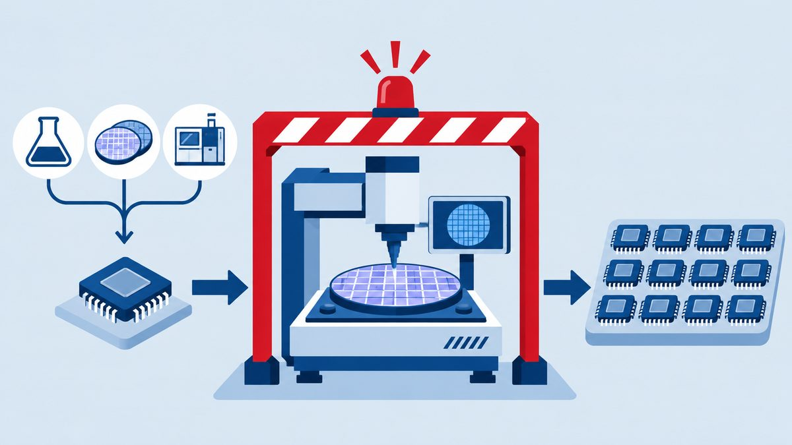

국산 소부장, 개발 다음 문턱은 양산 검증

[AI 생성 일러스트] 기사 내용을 설명하는 도식이며 실제 사진이 아닙니다.
- 민관합동 실증팹 구축이 정책과제로 제안됐다
- 용인시는 양산 연계형 트리니티팹을 계획했다
- 시설 운영 조건과 납품 연결 방식은 미확인
개발 지원에서 검증 기반으로
국산 반도체 소재·부품·장비의 양산 검증을 지원하는 구상이 정부와 지방자치단체에서 나왔다. 11월 26일 전략경제자문단 보고회에서는 민관이 함께 실증팹을 구축하자는 제안이 제시됐다. 같은 날 용인시는 첨단반도체 양산과 연결하는 미니팹인 트리니티팹을 추진할 계획이라고 밝혔다. 제품 개발 이후 실제 공정에 들어가기까지의 간극을 다루는 움직임이다.
두 구상은 발표 주체와 추진 경로가 다르다. 자문단의 실증팹은 정부에 건의된 정책과제이며, 용인시의 미니팹은 지역 반도체 생태계 조성 계획에 포함됐다. 제공된 자료에는 두 시설이 같은 사업이라는 설명이 없다. 착공이나 가동이 확인된 것도 아니어서, 발표된 구상과 이미 이용할 수 있는 검증 시설을 구분할 필요가 있다.
써본 이력이 있어야 쓸 수 있는 구조
검증 기반이 거론되는 배경에는 소부장 기업과 반도체 제조사의 서로 다른 부담이 있다. 11월 27일 보도에서 국내 소부장 업체들은 제품을 개발해도 사용 실적이 없다는 이유로 공급망에 진입하기 어렵다고 호소했다. 일부 업체는 국산 대체품을 제시했을 때 기존 외산보다 큰 폭의 가격 인하를 요구받는다고 주장했다. 이는 보도에 등장한 업체들의 경험으로, 모든 거래에 적용되는 가격 관행으로 단정할 수는 없다.
제조사 입장에서는 소재나 부품 하나의 변경도 수율, 즉 생산한 제품 가운데 합격품이 차지하는 비율에 영향을 줄 수 있다. 성능 시험을 통과한 제품이라도 실제 생산 과정에서 안정적으로 작동하는지는 별도로 확인해야 한다. 수십 년의 공급 실적을 가진 기존 업체는 이런 검증 이력을 축적했다. 신규 기업은 이력이 없어 채택되기 어렵고, 채택되지 않아 이력을 쌓기 어려운 상황에 놓인다.
실증팹 논의는 이 순환을 끊을 수 있는 공정 평가 기회를 늘리자는 취지다. 연구실에서 확보한 기술을 양산과 유사한 환경에서 평가하면 제조사의 도입 부담을 낮추고 개발업체에는 실적을 쌓을 기회를 줄 수 있다는 설명이다. 다만 실증시설의 평가 결과를 개별 제조사가 어떤 방식으로 인정할지는 자료에서 확인되지 않았다. 시설 확보와 실제 납품은 서로 다른 단계다.
첨단 기술과 범용 가격 사이
국내 소부장 기업이 마주한 경쟁은 국산과 외산의 단순한 대결로 나뉘지 않는다. 첨단 공정에서는 미국·일본 등 기존 공급업체의 기술과 안정성을 넘어야 한다. 보도는 장비 분야의 어플라이드머티어리얼즈와 램리서치, 도쿄일렉트론, 소재 분야의 신에츠화학과 JSR 등을 주요 기업으로 들었다. 제조사와의 장기 협력이 신규 공급자의 진입 문턱으로 작용하는 구조다.
한편 가격 경쟁의 비중이 큰 범용 소재·부품에서는 중국산이 확대되고 있다. 보도에 인용된 한국개발연구원 보고서는 소부장 품목의 중국 의존도가 10년 사이 25%에서 30% 수준으로 높아졌다고 분석했다. 2024년 소재와 부품 수입에서 중국 비중은 각각 29%, 34%로 제시됐다. 이 수치는 소부장 전반의 수입 구조를 설명한 것으로, 모든 첨단 반도체 품목의 의존도를 뜻하지 않는다.
이런 구도에서는 기술을 개발했다는 사실만으로 시장이 확보되기 어렵다. 첨단 제품은 공정 적합성과 신뢰성을, 범용 제품은 가격 경쟁력까지 입증해야 한다. 실증시설은 이 가운데 양산 성능을 확인하는 기반에 해당한다. 판매가격이나 생산 규모까지 보장하는 장치는 아니므로, 검증 지원의 효과도 공급망 진입 과정의 어느 부담을 줄이느냐에 따라 달라질 수 있다.
공공수요와 민간 양산은 다른 경로
정부는 같은 보고회에서 국가안보 관련 기반시설에 국산 반도체를 우선 구매하도록 법제화를 추진하겠다고 밝혔다. 소부장의 국산화와 양산 중심 연구개발·실증을 지원한다는 방침도 제시했다. 다만 국산 반도체의 공공 구매 확대와 소부장 제품의 민간 팹 채택은 직접적인 대상이 다르다. 공공수요가 늘어난다고 특정 소재나 장비의 납품이 함께 확정되는 것은 아니다.
용인시는 트리니티팹 외에도 지역 연구소·대학·기업이 참여하는 협력 플랫폼을 계획하고, 한국형 아이멕을 구축하는 방안도 모색한다고 밝혔다. 연구개발과 인력 양성, 공정 평가를 연결하려는 구상이다. 그러나 제공된 자료에는 미니팹의 예산, 장비 구성, 이용 기업 선정 기준이 제시되지 않았다. 앞으로 이 조건이 정해져야 어떤 제품이 어느 수준의 공정에서 검증받을 수 있는지 드러난다.
이번 움직임의 산업적 의미는 소부장 지원 논의가 개발 성과 이후의 단계로 확장됐다는 데 있다. 기술을 만들고도 판매에 이르지 못하는 문제를 검증 기반과 초기 수요라는 서로 다른 수단으로 다루기 시작했다. 실제 성과의 범위는 시설의 이름이나 조성 발표보다 공정 평가가 얼마나 양산에 가까운지, 그 결과가 고객 채택으로 이어지는지에 달려 있다.
앞으로 볼 변수
- "1000만원짜리 외산엔 척척, 국산엔 30% 깎아라"…삼성·SK 문턱에 막힌... · 네이버뉴스 · 2026-11-27
- 국가안보 시설에 국산 반도체 우선구매…정부, 특별법 개정 추진 · 네이버뉴스 · 2026-11-26
- 이상일 용인특례시장 “반도체 클러스터 고도화...첨단산업 도시 만들것” · 매일경제 기업 · 2026-11-26
- 이형일 "국산 반도체 우선구매 제도화…피지컬AI 공공 보급 추진" · 네이버뉴스 · 2026-11-26
이 포스팅은 쿠팡 파트너스 활동의 일환으로 수수료를 제공받습니다.